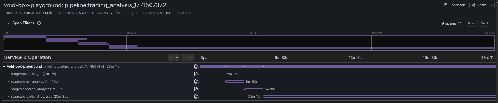

Events + Observability
Run Event Model
Every pipeline run in VoidBox is fully instrumented. The event system provides structured identity fields on every action, OTLP-compatible traces and metrics, and structured logs -- all designed to keep capability and boundary context explicit.
Identity Fields
Every event carries these fields
run_id -- unique identifier for the pipeline run.
box_name -- the VoidBox that emitted the event.
skill_id -- which skill is active.
environment_id -- the execution environment (VM) identifier.
mode -- execution mode (single, pipeline, workflow).
stream -- output stream (stdout, stderr).
seq -- monotonic sequence number for ordering.
Core Event Types
| Event | Description |
|---|
run.started | Pipeline run has begun execution. |
run.finished | Pipeline run completed successfully. |
run.failed | Pipeline run failed with an error. |
run.cancelled | Pipeline run was cancelled by the user. |
env.provisioned | Guest environment has been provisioned (skills, config, mounts). |
skill.mounted | A skill has been written to the guest filesystem. |
box.started | A VoidBox has started execution within a stage. |
workflow.planned | A workflow planner has generated a pipeline plan. |
log.chunk | A chunk of streaming output from the guest (stdout/stderr). |
log.closed | The output stream for a box has closed. |
Trace Structure
VoidBox emits OpenTelemetry-compatible traces that capture the full execution hierarchy:
Pipeline span
└─ Stage 1 span (box_name="data_analyst")
├─ tool_call event: Read("input.json")
├─ tool_call event: Bash("curl ...")
└─ attributes: tokens_in, tokens_out, cost_usd, model
└─ Stage 2 span (box_name="quant_analyst")
└─ ...
Each stage span includes attributes for token counts, cost, model used, and individual tool call events. Fan-out stages create parallel child spans under the same pipeline parent.

Instrumentation
OTLP Traces
Full distributed traces exported via OTLP gRPC. Pipeline, stage, and tool-call spans with rich attributes for token usage, cost, model, and timing.
Metrics
Token counts (input/output), cost in USD, execution duration, and VM lifecycle timing. Exported as OTLP metrics alongside traces.
Structured Logs
All log output is prefixed with [vm:NAME] for easy filtering. Stream-json output from claude-code is parsed into structured events.
Guest Telemetry
The guest-agent reads /proc/stat and /proc/meminfo periodically, sending TelemetryBatch messages over vsock. The host-side TelemetryAggregator ingests these and exports as OTLP metrics.
Configuration
| Env var | Description |
|---|
VOIDBOX_OTLP_ENDPOINT | OTLP gRPC endpoint (e.g. http://localhost:4317) |
OTEL_SERVICE_NAME | Service name for traces (default: void-box) |
OpenTelemetry support is enabled at compile time:
cargo build --features opentelemetry
For a full OTLP setup walkthrough with Jaeger or Grafana, see the Observability Setup guide.
Guest Telemetry Pipeline
The guest-side telemetry pipeline works independently from the host tracing system:
- The guest-agent periodically reads
/proc/stat (CPU usage) and /proc/meminfo (memory usage).
- Readings are batched into a
TelemetryBatch message and sent to the host over the vsock channel.
- The host-side
TelemetryAggregator receives batches, computes deltas, and exports them as OTLP metrics.
This gives visibility into guest resource consumption without any instrumentation inside the workload itself.
Persistence Providers
Daemon run and session state uses a provider abstraction, allowing different storage backends:
Disk (default)
File-based persistence. Run state and events are stored as JSON files on the local filesystem. No external dependencies.
SQLite / Valkey
Adapter implementations for sqlite and valkey (Redis-compatible) backends. Useful for shared state in multi-node deployments.